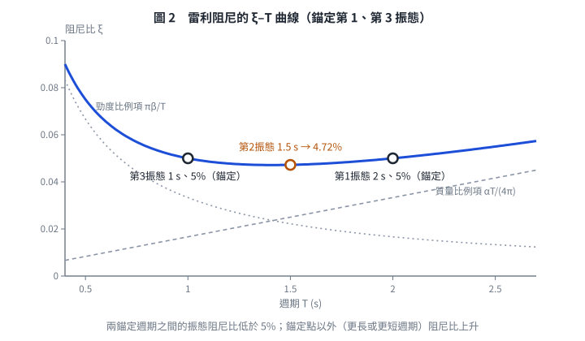

📄 題目正本：考卷原文・附圖・判讀清單（已確認）
SD-2003-3 題目正本
本檔只記錄考卷上寫了什麼、圖上畫了什麼，不含任何解法。解析見同資料夾
SD-2003-3.md。
判讀清單經使用者確認前，狀態為「待確認」；確認後本檔原則上不再修改（改動須回考卷原圖並記 log）。
| 項目 | 內容 |
|---|---|
| 考卷 | raw/exams/SD-2003_結構動力分析與耐震設計.pdf，第 1 頁（正面），第三題 |
| 考年 | 2003（民國九十二年）專技高考結構工程技師「結構動力分析與耐震設計」 |
| 配分 | 20 分 |
| 附圖 | 無（本題無附圖） |
| 判讀狀態 | 已確認（2026-11-15 使用者授權依 Claude 建議確認。原轉錄：2026-11-15 轉錄；PyMuPDF 110／150 dpi 整頁＋450–500 dpi 局部放大，PDF 文字層與向量座標核對；盲讀於開啟解析前完成） |
1. 考卷原文（逐字）
三、一般於結構動力分析上常將阻尼矩陣假設為古典（雷利）阻尼(classical or Rayleigh damping)，這樣的假設於計算上有何優點？於此假設下試推導出振態阻尼比與其對應週期的關係。接著應用此關係於如下之五個自由度系統：第一振態週期為2sec 阻尼比為5%，第三振態週期為1sec 阻尼比為5%；若第二振態週期為1.5sec，則其阻尼比為何？（20 分）
2. 考卷給的公式、附表與參數
- 考卷沒有給任何參考公式或附表。
- 給定：五自由度系統；$T_1=2$ s、$\xi_1=5\%$；$T_3=1$ s、$\xi_3=5\%$；$T_2=1.5$ s。
- 考卷沒有給：質量、勁度矩陣（不需要）。
- 卷首注意事項：㈠不必抄題，作答時請將試題題號及答案依照順序寫在試卷上，於本試題上作答者，不予計分。㈡可以使用電子計算器，但需詳列解答過程。考試時間：二小時。
3. 附圖
本題無附圖。
4. 判讀清單
| # | 項目 | 判讀 | 圖上／題文依據 | 把握 |
|---|---|---|---|---|
| 1 | 阻尼假設 | 題文「古典（雷利）阻尼」並列：以雷利阻尼 $\mathbf{C}=a_0\mathbf{M}+a_1\mathbf{K}$ 表示（古典阻尼的一種） | 題文括號 | 確定（解讀） |
| 2 | 錨定振態 | 第 1、第 3 振態（不是第 1、第 2） | 題文 | 確定 |
| 3 | 給的是週期 | $T$（秒），不是頻率；推導要寫成 $\xi$ 與 $T$ 的關係 | 題文「對應週期的關係」 | 確定 |
| 4 | 所求 | ㈠優點 ㈡推導 $\xi_n$–$T_n$ 關係 ㈢ $\xi_2$（$T_2=1.5$ s） | 題文 | 確定 |
轉錄：2026-11-15（SD-U1-3 題目正本推廣・批 1）
確認：2026-11-15 使用者授權依 Claude 建議確認（SD-U1-3 題目正本推廣・批 1，關卡一）
考題編號：SD-2003-3
主分類： SD-U1 結構動力學基礎
副分類： SD-U1-3 多自由度系統之動態分析及應用
分析方法： MDOF 模態分析（Rayleigh 阻尼推導）
標籤： Rayleigh阻尼 古典阻尼 阻尼矩陣 振態阻尼比 模態解耦 比例阻尼 MDOF
1. 題目（考卷原文見題目正本）
考卷原文、公式／附表、附圖與判讀清單（已確認）見
SD-2003-3-problem.md。本節只列解題時最容易讀錯的地方與本解使用的記號；題意以題目正本為準。
常見誤讀
| 項目 | 正確判讀 | 常見誤讀 |
|---|---|---|
| 錨定振態 | 第 1、第 3 振態（$T_1=2$ s、$T_3=1$ s 皆 5%） | 第 1、第 2 振態 |
| 給的量 | 週期 $T$（秒），推導要寫成 $\xi$–$T$ 關係 | 直接把 $T$ 代入 $\omega$ 的位置 |
| 所求 | 優點、推導、$\xi_2$（$T_2=1.5$ s） | 只算數值 |
本解記號： 雷利阻尼 $\mathbf{C}=a_0\mathbf{M}+a_1\mathbf{K}$，$\xi_n=\dfrac{a_0}{2\omega_n}+\dfrac{a_1\omega_n}{2}$，$\omega_n=2\pi/T_n$。
2. 考題核心精神與出題者意圖 (Core Concepts & Examiner's Intent)
本題核心：「Rayleigh 阻尼的數學結構與其對不同振態阻尼比的影響」
- Part A 考驗考生理解「古典阻尼 → 方程式解耦 → 可進行模態疊加法」這條推理鏈
- Part B 考驗從矩陣定義出發推導出 $\xi_i$ 與 $\omega_i$（或 $T_i$）的解析關係
- Part C 考驗兩聯立方程式解 $\alpha$、$\beta$，再代入求中間振態阻尼比
物理洞見： Rayleigh 阻尼曲線（$\xi$ vs $T$ 或 $\xi$ vs $\omega$）是一條「U 形」曲線，指定兩點後，中間振態阻尼比低於兩端點，此為本題答案合理性的驗核依據。
3. 解題戰略地圖與陷阱分析 (Strategic Roadmap & Trap Analysis)
步驟路線：
$$[\mathbf{C}] = \alpha[\mathbf{M}] + \beta[\mathbf{K}] \;\to\; \text{模態正交性} \;\to\; \xi_i = \frac{\alpha}{2\omega_i} + \frac{\beta\omega_i}{2} \;\to\; \text{代入已知振態} \;\to\; \text{解}\,\alpha,\beta \;\to\; \text{求}\,\xi_2$$
關鍵陷阱：
陷阱 1： Part B 推導時，模態正交性需同時用到 $\boldsymbol{\phi}_i^T\mathbf{M}\boldsymbol{\phi}_j = 0$（$i\neq j$）和 $\boldsymbol{\phi}_i^T\mathbf{K}\boldsymbol{\phi}_j = 0$（$i\neq j$），這是「古典阻尼」可解耦的核心。
陷阱 2： Part C 中，兩個方程式的係數（$1/\omega_1, \omega_1$ 和 $1/\omega_3, \omega_3$）必須正確代入，不可混用頻率與週期。
陷阱 3： 最終 $\xi_2$ 應小於 5%（因為兩錨點阻尼比相同，Rayleigh 曲線在中間振態處有極小值）。若計算結果 $\xi_2 > 5\%$，表示計算有誤。
陷阱 4： Part A 的「計算優點」要明確說出「方程式解耦 → 各振態獨立求解 SDOF → 可用模態疊加法」，不能只說「計算方便」。
3.5 變數層次分析 (Variable Hierarchy Analysis)
複習提示：第一次解題後，在每個卡住的知識點旁標記
⚠；第二次複習時只看有⚠的項目。
最終目標
推導 Rayleigh 阻尼下振態阻尼比公式，並應用求 5DOF 系統第二振態阻尼比
本題關鍵公式（依計算順序）
$$[\mathbf{C}] = \alpha[\mathbf{M}] + \beta[\mathbf{K}]$$
$$\boldsymbol{\phi}_i^T[\mathbf{C}]\boldsymbol{\phi}_i = \alpha\,\boldsymbol{\phi}_i^T[\mathbf{M}]\boldsymbol{\phi}_i + \beta\,\boldsymbol{\phi}_i^T[\mathbf{K}]\boldsymbol{\phi}_i = (\alpha + \beta\omega_i^2)\,m_i^*$$
$$2\xi_i\omega_i m_i^* = (\alpha + \beta\omega_i^2)\,m_i^* \implies \boxed{\xi_i = \frac{\alpha}{2\omega_i} + \frac{\beta\omega_i}{2}}$$
$$\text{以週期表示：} \omega_i = \frac{2\pi}{T_i} \implies \xi_i = \frac{\alpha T_i}{4\pi} + \frac{\beta\pi}{T_i}$$
$$\begin{cases} \xi_1 = \dfrac{\alpha}{2\omega_1} + \dfrac{\beta\omega_1}{2} \\ \xi_3 = \dfrac{\alpha}{2\omega_3} + \dfrac{\beta\omega_3}{2} \end{cases} \implies \text{解}\,\alpha,\,\beta$$
$$\xi_2 = \frac{\alpha}{2\omega_2} + \frac{\beta\omega_2}{2}$$
L1：題目直接給定
| 符號 | 數值 | 說明 |
|---|---|---|
| $T_1$ | $2\,\text{s}$ | 第一振態週期 |
| $\xi_1$ | $0.05$ | 第一振態阻尼比 |
| $T_3$ | $1\,\text{s}$ | 第三振態週期 |
| $\xi_3$ | $0.05$ | 第三振態阻尼比 |
| $T_2$ | $1.5\,\text{s}$ | 第二振態週期（待求） |
L2：需知識點推導
Part B 推導鏈
| 符號 | 公式／來源 | 卡關? |
|---|---|---|
| $\boldsymbol{\phi}_i^T\mathbf{M}\boldsymbol{\phi}_j$ | $= m_i^*\delta_{ij}$（振態正交性） | |
| $\boldsymbol{\phi}_i^T\mathbf{K}\boldsymbol{\phi}_j$ | $= \omega_i^2 m_i^*\delta_{ij}$（振態正交性） | |
| 廣義阻尼 $C_i^*$ | $= \boldsymbol{\phi}_i^T\mathbf{C}\boldsymbol{\phi}_i = (\alpha + \beta\omega_i^2)m_i^*$ | |
| SDOF 阻尼定義 | $C_i^* = 2\xi_i\omega_i m_i^*$ | |
| $\xi_i$ 公式 | $= \alpha/(2\omega_i) + \beta\omega_i/2$ |
Part C 計算鏈
| 符號 | 公式／來源 | 卡關? |
|---|---|---|
| $\omega_1$ | $2\pi/T_1 = \pi\,\text{rad/s}$ | |
| $\omega_3$ | $2\pi/T_3 = 2\pi\,\text{rad/s}$ | |
| $\omega_2$ | $2\pi/T_2 = 4\pi/3\,\text{rad/s}$ | |
| 聯立方程 | $\xi_1 = \alpha/(2\omega_1) + \beta\omega_1/2$，$\xi_3 = \alpha/(2\omega_3) + \beta\omega_3/2$ | |
| $\alpha,\beta$ | 解聯立方程 | |
| $\xi_2$ | $\alpha/(2\omega_2) + \beta\omega_2/2$ |
L3：深層知識（不懂就卡住）
| 知識點 | 說明 | 卡關? |
|---|---|---|
| 古典阻尼的解耦條件 | $\boldsymbol{\phi}_i^T\mathbf{C}\boldsymbol{\phi}_j = 0$（$i\neq j$），等價於 $\mathbf{C}$ 可由 $\mathbf{M}$、$\mathbf{K}$ 的線性組合表示 | |
| Rayleigh 阻尼曲線的形狀 | $\xi(\omega) = \alpha/(2\omega) + \beta\omega/2$ 在 $\omega^* = \sqrt{\alpha/\beta}$ 處有極小值，呈 U 形，說明中間振態阻尼比較低 | |
| 廣義質量正規化方式 | 取決於正規化選擇（質量正規化：$m_i^*=1$；其他正規化：$m_i^*\neq 1$），但比例 $C_i^*/(m_i^*)$ 不變，$\xi_i$ 公式不受正規化方式影響 | |
| 為何只用兩個振態鎖定 $\alpha,\beta$ | Rayleigh 阻尼只有兩個自由參數 $\alpha,\beta$，恰好用兩個振態的已知阻尼比解出，其他振態阻尼比由曲線決定 |
4. 步驟化詳細計算過程 (Step-by-Step Detailed Calculation)
Part A：古典（Rayleigh）阻尼的計算優點
Rayleigh 阻尼定義為：
$$[\mathbf{C}] = \alpha[\mathbf{M}] + \beta[\mathbf{K}]$$
其中 $\alpha$（質量比例阻尼係數，單位 1/s）與 $\beta$（勁度比例阻尼係數，單位 s）為常數。
計算優點 — 方程式解耦（Decoupling of Equations of Motion）：
MDOF 運動方程：$[\mathbf{M}]\{\ddot{\mathbf{u}}\} + [\mathbf{C}]\{\dot{\mathbf{u}}\} + [\mathbf{K}]\{\mathbf{u}\} = \{\mathbf{F}(t)\}$
作模態轉換 $\{\mathbf{u}\} = [\boldsymbol{\Phi}]\{\mathbf{q}\}$（$\boldsymbol{\Phi}$ 為振態矩陣），前乘 $[\boldsymbol{\Phi}]^T$：
$$[\boldsymbol{\Phi}]^T[\mathbf{M}][\boldsymbol{\Phi}]\{\ddot{\mathbf{q}}\} + [\boldsymbol{\Phi}]^T[\mathbf{C}][\boldsymbol{\Phi}]\{\dot{\mathbf{q}}\} + [\boldsymbol{\Phi}]^T[\mathbf{K}][\boldsymbol{\Phi}]\{\mathbf{q}\} = [\boldsymbol{\Phi}]^T\{\mathbf{F}(t)\}$$
因為振態對 $[\mathbf{M}]$ 和 $[\mathbf{K}]$ 正交，這兩項已對角化。
關鍵： 若 $[\mathbf{C}] = \alpha[\mathbf{M}] + \beta[\mathbf{K}]$，則：
$$[\boldsymbol{\Phi}]^T[\mathbf{C}][\boldsymbol{\Phi}] = \alpha[\boldsymbol{\Phi}]^T[\mathbf{M}][\boldsymbol{\Phi}] + \beta[\boldsymbol{\Phi}]^T[\mathbf{K}][\boldsymbol{\Phi}]$$
右端兩項均為對角矩陣，故 $[\boldsymbol{\Phi}]^T[\mathbf{C}][\boldsymbol{\Phi}]$ 也是對角矩陣 → 阻尼矩陣解耦！
結果：MDOF 方程組解耦為 $n$ 個獨立的 SDOF 方程：
$$m_i^*\ddot{q}_i + c_i^*\dot{q}_i + k_i^* q_i = \phi_i^T F(t)$$
$$\boxed{\ddot{q}_i + 2\xi_i\omega_i\dot{q}_i + \omega_i^2 q_i = \frac{\phi_i^T F(t)}{m_i^*}}$$
優點小結：
- 各振態獨立求解，可套用 SDOF 的所有解析解（Duhamel 積分、反應譜）
- 可進行模態疊加法（Modal Superposition Method），大幅降低計算量
- 只需 2 個參數（$\alpha,\beta$）描述整體阻尼特性
- 數值上穩定，避免求解完整阻尼矩陣的逆矩陣
Part B：推導振態阻尼比與週期的關係
對第 $i$ 振態，廣義阻尼係數為：
$$C_i^* = \boldsymbol{\phi}_i^T[\mathbf{C}]\boldsymbol{\phi}_i = \alpha\,\boldsymbol{\phi}_i^T[\mathbf{M}]\boldsymbol{\phi}_i + \beta\,\boldsymbol{\phi}_i^T[\mathbf{K}]\boldsymbol{\phi}_i$$
利用振態正交性（以質量正規化為例，$\boldsymbol{\phi}_i^T[\mathbf{M}]\boldsymbol{\phi}_i = m_i^*$，$\boldsymbol{\phi}_i^T[\mathbf{K}]\boldsymbol{\phi}_i = \omega_i^2 m_i^*$）：
$$C_i^* = (\alpha + \beta\omega_i^2)\,m_i^*$$
SDOF 等效阻尼定義：
$$C_i^* = 2\xi_i\omega_i\,m_i^*$$
兩式相等：
$$2\xi_i\omega_i\,m_i^* = (\alpha + \beta\omega_i^2)\,m_i^*$$
$$\boxed{\xi_i = \frac{\alpha}{2\omega_i} + \frac{\beta\omega_i}{2}}$$
以週期表示（$\omega_i = 2\pi/T_i$）：
$$\xi_i = \frac{\alpha}{2} \cdot \frac{T_i}{2\pi} + \frac{\beta}{2} \cdot \frac{2\pi}{T_i} = \frac{\alpha T_i}{4\pi} + \frac{\beta\pi}{T_i}$$
$$\boxed{\xi_i = \frac{\alpha T_i}{4\pi} + \frac{\beta\pi}{T_i}}$$
物理解讀：
- 第一項 $\alpha T_i/(4\pi)$：質量比例項，與週期成正比 → 長週期振態阻尼比較大
- 第二項 $\beta\pi/T_i$：勁度比例項，與週期成反比 → 短週期振態阻尼比較大
- 在某中間週期 $T^* = 2\pi\sqrt{\beta/\alpha}$ 處阻尼比最小
Part C：計算五個自由度系統第二振態阻尼比
Step 1：將已知條件轉換為角頻率
$$\omega_1 = \frac{2\pi}{T_1} = \frac{2\pi}{2} = \pi\,\text{rad/s}$$
$$\omega_3 = \frac{2\pi}{T_3} = \frac{2\pi}{1} = 2\pi\,\text{rad/s}$$
$$\omega_2 = \frac{2\pi}{T_2} = \frac{2\pi}{1.5} = \frac{4\pi}{3}\,\text{rad/s}$$
Step 2：建立聯立方程組
代入公式 $\xi_i = \alpha/(2\omega_i) + \beta\omega_i/2$：
$$\text{(I)}\quad 0.05 = \frac{\alpha}{2\pi} + \frac{\beta\pi}{2}$$
$$\text{(II)}\quad 0.05 = \frac{\alpha}{4\pi} + \frac{\beta\cdot 2\pi}{2} = \frac{\alpha}{4\pi} + \beta\pi$$
Step 3：解聯立方程組
方程式 (I) 兩側乘以 $2\pi$：
$$\alpha + \beta\pi^2 = 0.1\pi \quad \cdots\,\text{(I')}$$
方程式 (II) 兩側乘以 $4\pi$：
$$\alpha + 4\beta\pi^2 = 0.2\pi \quad \cdots\,\text{(II')}$$
(II') $-$ (I')：
$$3\beta\pi^2 = 0.1\pi \implies \beta = \frac{0.1\pi}{3\pi^2} = \frac{0.1}{3\pi} = \frac{1}{30\pi}\,\text{s}$$
$$\beta = \frac{1}{30\pi} \approx 0.01061\,\text{s}$$
代回 (I')：
$$\alpha = 0.1\pi - \beta\pi^2 = 0.1\pi - \frac{\pi^2}{30\pi} = 0.1\pi - \frac{\pi}{30} = \pi\!\left(0.1 - \frac{1}{30}\right) = \pi\cdot\frac{2}{30} = \frac{\pi}{15}$$
$$\alpha = \frac{\pi}{15} \approx 0.2094\,\text{rad/s}$$
驗算：
$$\xi_1 = \frac{\alpha}{2\omega_1} + \frac{\beta\omega_1}{2} = \frac{\pi/15}{2\pi} + \frac{(1/30\pi)\cdot\pi}{2} = \frac{1}{30} + \frac{1}{60} = \frac{2+1}{60} = \frac{1}{20} = 5\%\quad\checkmark$$
$$\xi_3 = \frac{\alpha}{2\omega_3} + \frac{\beta\omega_3}{2} = \frac{\pi/15}{4\pi} + \frac{(1/30\pi)\cdot 2\pi}{2} = \frac{1}{60} + \frac{1}{30} = \frac{1+2}{60} = \frac{1}{20} = 5\%\quad\checkmark$$
Step 4：求第二振態阻尼比
$$\xi_2 = \frac{\alpha}{2\omega_2} + \frac{\beta\omega_2}{2} = \frac{\pi/15}{2\cdot(4\pi/3)} + \frac{(1/30\pi)\cdot(4\pi/3)}{2}$$
$$= \frac{\pi/15}{8\pi/3} + \frac{4/(30\times 3)}{2 \cdot \frac{1}{\pi}\cdot\pi}$$
讓我逐項計算：
第一項：
$$\frac{\alpha}{2\omega_2} = \frac{\pi/15}{2 \cdot 4\pi/3} = \frac{\pi/15}{8\pi/3} = \frac{\pi}{15} \cdot \frac{3}{8\pi} = \frac{3}{120} = \frac{1}{40}$$
第二項：
$$\frac{\beta\omega_2}{2} = \frac{(1/30\pi)\cdot(4\pi/3)}{2} = \frac{4/(30\cdot 3)}{2} = \frac{4}{90\cdot 2} = \frac{4}{180} = \frac{1}{45}$$
合計：
$$\xi_2 = \frac{1}{40} + \frac{1}{45} = \frac{45}{1800} + \frac{40}{1800} = \frac{85}{1800} = \frac{17}{360}$$
$$\boxed{\xi_2 = \frac{17}{360} \approx 0.04722 = 4.72\%}$$
合理性驗核： $\xi_2 = 4.72\% < 5\%$（小於兩端錨點阻尼比），符合 Rayleigh 阻尼 U 形曲線在中間振態有極小值的物理規律 ✓

圖 2 雷利阻尼的 ξ–T 曲線。錨定的是第 1、第 3 振態；兩錨定點之間的阻尼比低於 5%，所以 $\xi_2=4.72\%$ 一定小於 5%，算出大於 5% 就是錨錯振態或代錯週期。
5. 關鍵爭議點與進階探討 (Critical Issues & Advanced Discussion)
5.1 Rayleigh 阻尼的限制
Rayleigh 阻尼雖然計算方便，但有以下已知缺陷：
- 高振態阻尼比偏高： 勁度比例項 $\beta\omega_i/2$ 使高頻振態阻尼比過大，抑制高振態反應。在需精確計算高振態貢獻時（如衝擊荷載），可能低估結構反應。
- 兩錨點之間有極小值： 如本題，$T \in (1, 2\,\text{s})$ 的振態阻尼比低於 5%，若設計上認為所有振態應有至少 5% 阻尼，則 Rayleigh 阻尼並不能保證。
- 無法獨立指定各振態阻尼比： 所有振態阻尼比由曲線 $\xi(\omega)$ 決定，只有兩個參數可控。
5.2 更一般化的古典阻尼
若允許更多自由參數，可使用 Caughey Series：
$$[\mathbf{C}] = [\mathbf{M}]\sum_{k=0}^{n-1} a_k\left([\mathbf{M}]^{-1}[\mathbf{K}]\right)^k$$
此時 $\xi_i = \frac{1}{2\omega_i}\sum_k a_k\omega_i^{2k}$，可用 $n$ 個錨點精確指定 $n$ 個振態的阻尼比。Rayleigh 阻尼是 $n=2$（$k=0,1$）的特殊情況。
5.3 Rayleigh 阻尼 U 形曲線的最低點
最小阻尼比出現在：
$$\frac{d\xi}{d\omega} = -\frac{\alpha}{2\omega^2} + \frac{\beta}{2} = 0 \implies \omega^* = \sqrt{\frac{\alpha}{\beta}} = \sqrt{\frac{\pi/15}{1/30\pi}} = \sqrt{2\pi^2} = \pi\sqrt{2}$$
$$T^* = \frac{2\pi}{\omega^*} = \frac{2\pi}{\pi\sqrt{2}} = \sqrt{2} \approx 1.414\,\text{s}$$
即週期約 1.41 s 時阻尼比最小：
$$\xi_{min} = 2\times\frac{\alpha}{2\omega^*} = \frac{\alpha}{\omega^*} = \frac{\pi/15}{\pi\sqrt{2}} = \frac{1}{15\sqrt{2}} \approx 4.71\%$$
$T_2 = 1.5\,\text{s}$ 接近但略大於 $T^* = 1.414\,\text{s}$，故 $\xi_2 = 4.72\% \approx \xi_{min}$，與計算結果一致 ✓
修正日期：2026-11-15（§1 改為指向題目正本）
圖解補繪：2026-11-15（向量圖，腳本 gen_SD-2003-3.py，可重跑；非勘誤、答案不變）